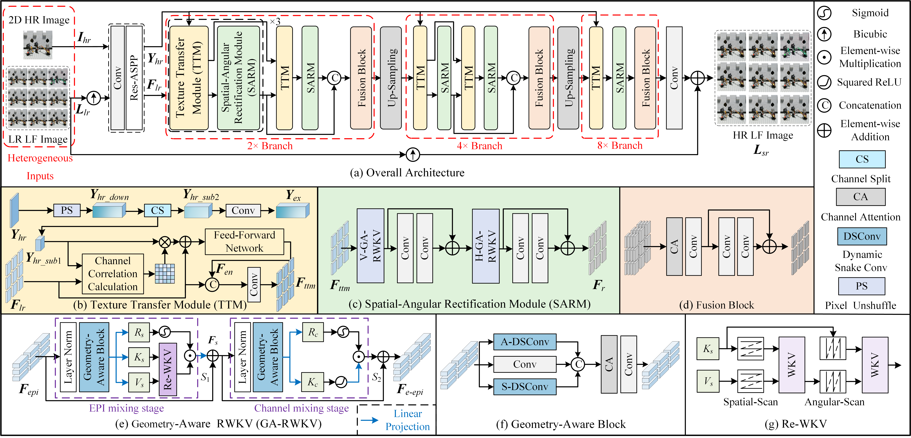

I am a graduate student at Ningbo University. My research focuses on light field imaging,
with particular interest in light field reconstruction and super-resolution.
New !!!
2025.04 —
We ranked 6th in the NTIRE 2025 Challenge on Light Field Image Super-Resolution.
2025.03 —
Our paper “Geometry-Aware RWKV for Heterogeneous Light Field Spatial Super-Resolution”
was published in IEEE SPL.
2024.07 —
Our work “Multi-Scale Spatial-Angular Collaborative Guidance Network for Heterogeneous Light Field Spatial Super-Resolution”
was published in IEEE TBC.
2024.03 —
Our paper “Hybrid Domain Learning towards Light Field Spatial Super-Resolution using Heterogeneous Imaging”
was accepted by ICASSP.
Education
2025.09 – Present —
Ningbo University
2022.09 – 2025.06 —
Ningbo University
2018.09 – 2022.06 —
Nanjing University of Science and Technology Zijin College
Publications
2025

Geometry-Aware RWKV for Heterogeneous Light Field Spatial Super-Resolution